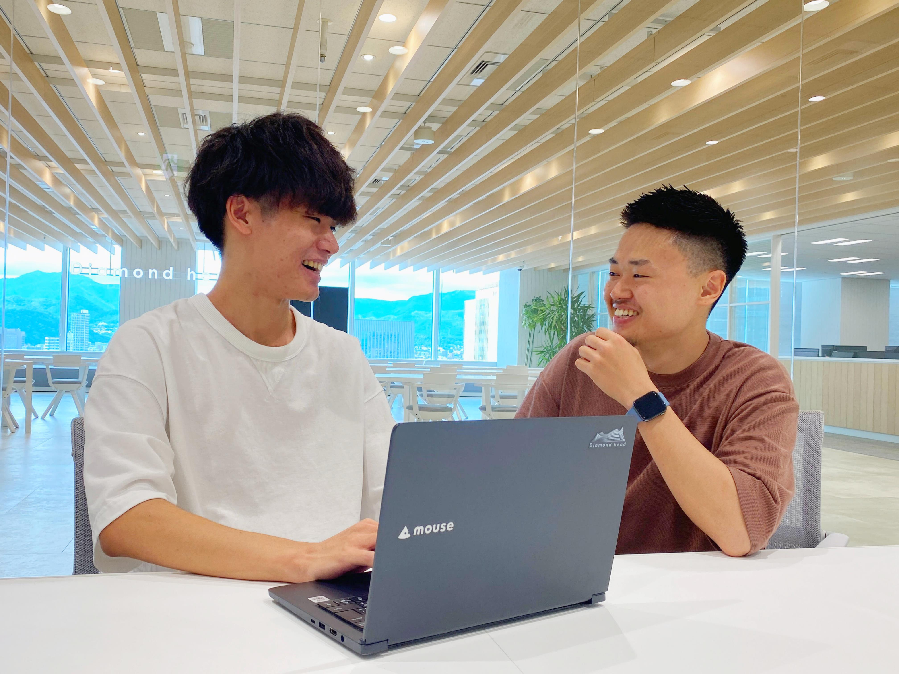
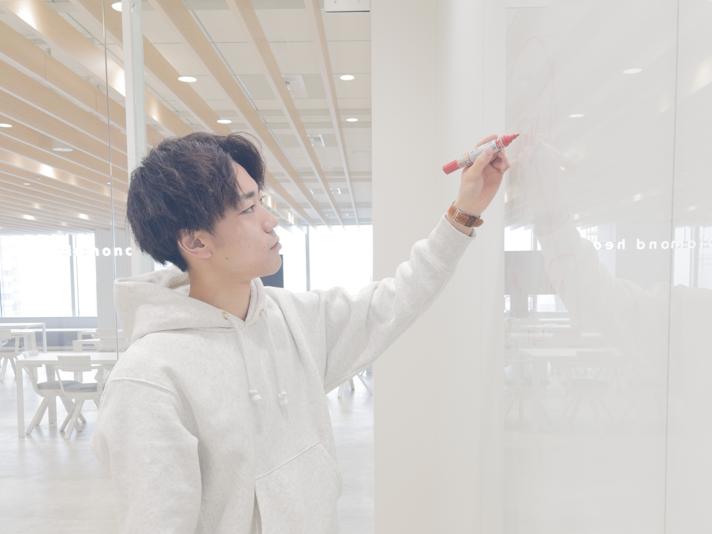
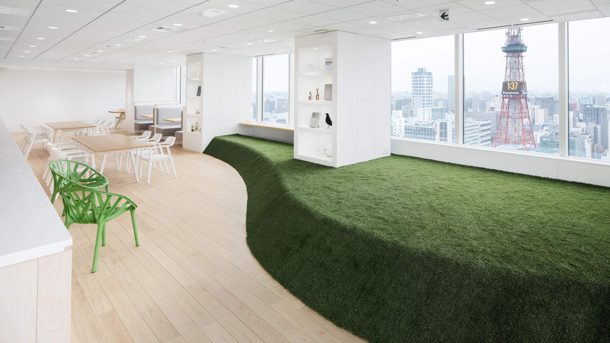
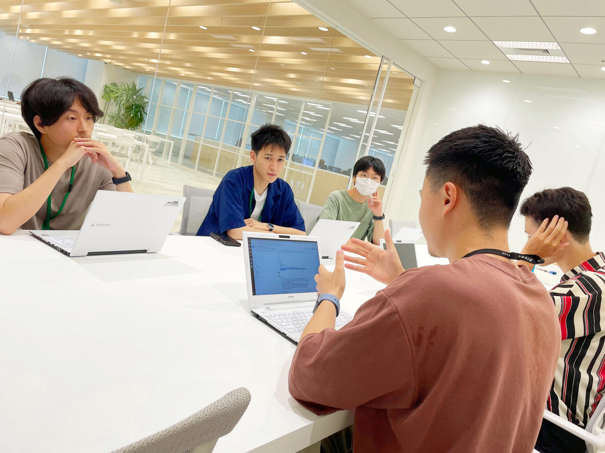

INTERNSHIP
インターンシップ採用
エンジニアのリアルを体感する
ダイアモンドヘッドは長年にわたり、北海道内はもちろん、全国各地や世界中から多様な学生をインターン生として迎えてきました。
どのプログラムにおいても重視しているのは、第一線で活躍するエンジニアとの密なコミュニケーションです。開発の最前線にいる社員と直接対話することで、エンジニアとして働く具体的なイメージが広がります。
プログラミング体験や実務解説を行う1dayから、本格的に実務へコミットする長期コースまで、みなさまのスキルや目的に合わせたコンテンツをご用意してお待ちしております。

3つのインターンシッププログラム

長期インターンシップ
(実務有償型)
通年受け入れ。実際の開発チームに所属し、社員と全く同じデイリースケジュールで実業務に携わる3週間〜8週間の有償プログラムです。実践的なプログラミング技術と開発現場のリアルを体感できます。
詳細・募集要項を見る
1dayインターンシップ
期間限定で開催しております。ダイアモンドヘッドのITエンジニア職に興味がある方向けに、プログラム体験×現役エンジニアによる実務解説を行います。札幌本社にて開催します。
詳細・募集要項を見る
2weeksインターンシップ（仮）
春季・夏季に開催される2週間のプログラム。集中した講義とプログラミング実践を通し、成果物に対して現場のシニアエンジニアから高度なレビューを受けられます。
詳細・募集要項を見る